R Statistics
1. R Elemantary Statistics
2. Basic Data Visualization
R Elemantary Statistics
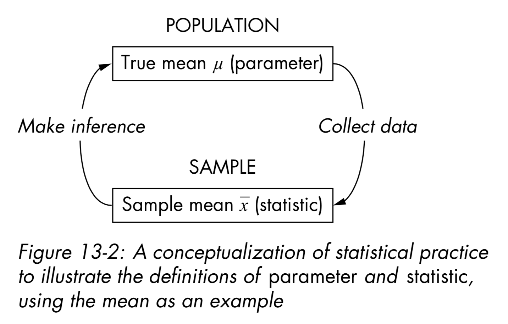
Centrality: Mean, Median, Mode
- Measures of centrality are commonly used to explain large collections of data by describing where numeric observations are centered.
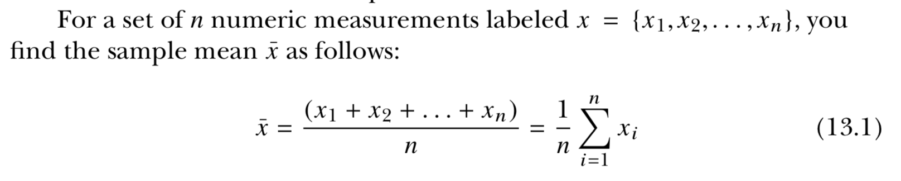
Centrality: Mean, Median, Mode
- Median : “middle magnitude” of your observations
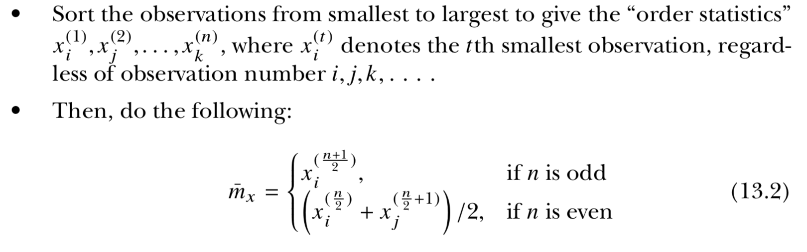
0 . 0 . 0 . 0 . 0
o . o . o . o . o . o
Centrality: Mean, Median, Mode
- Mode : Simply the “most common” observation.
Sample : 2 , 4.4 , 3 , 3 , 2 , 2.2 , 2 , 4

2 , 2 , 2 , 2.2 , 3 , 3 , 4, 4.4 ( n=8 , n/2 = 4)

Centrality: Mean, Median, Mode
xdata <- c(2,4.4,3,3,2,2.2,2,4)
- mean(xdata)
- median(xdata)
- min(xdata)
- max(xdata)
- range(xdata)
Quantiles, Percentiles, and the Five-Number Summary
- A quantile is a value indicates an observation rank when compared to all the other present observations.
- For example, the median is itself a quantile. It’s the 0.5th quantile.
- Alternatively, quantiles can be expressed as a percentile.
The median = the 0.5th quantile = The 50th percentile
Sample : 2 , 4.4 , 3 , 3 , 2 , 2.2 , 2 , 4
2 , 2 , 2 , 2.2 , 3 , 3 , 4, 4.4
0.5th quantile = median = 2.6
Quantiles, Percentiles, and the Five-Number Summary
xdata <- c(2,4.4,3,3,2,2.2,2,4)
quantile(xdata,prob=0.8) # the 0.8th quan- tile (or 80th percentile)## 80%
## 3.6quantile(xdata,prob=c(0,0.25,0.5,0.75,1))## 0% 25% 50% 75% 100%
## 2.00 2.00 2.60 3.25 4.40summary(xdata) # A quartile is a type of quantile.## Min. 1st Qu. Median Mean 3rd Qu. Max.
## 2.000 2.000 2.600 2.825 3.250 4.400Quantiles, Percentiles, and the Five-Number Summary

A quartile is a type of quantile.
Spread: Variance, Standard Deviation, and the Interquartile Range
- How dispersed your data are. For this, measures of spread are needed.
xdata <- c(2,4.4,3,3,2,2.2,2,4)
ydata <- c(1,4.4,1,3,2,2.2,2,7)
mean(xdata)## [1] 2.825mean(ydata)## [1] 2.825plot(xdata,type="n",xlab="",ylab="data vector",yaxt="n",bty="n")
abline(h=c(3,3.5),lty=2,col="red")
abline(v=2.825,lwd=2,lty=3)
text(c(0.8,0.8),c(3,3.5),labels=c("x","y"))
points(jitter(c(xdata,ydata)),c(rep(3,length(xdata)), rep(3.5,length(ydata))))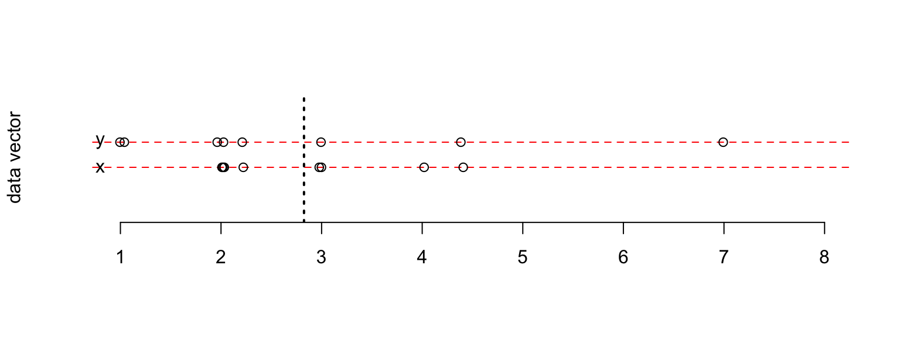
the observations in ydata are more “spread out”
Spread: Variance, Standard Deviation, and the Interquartile Range
- The sample variance measures the degree of the spread of numeric observations around their arithmetic mean.
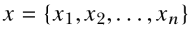

Spread: Variance, Standard Deviation, and the Interquartile Range
2 , 4.4 , 3 , 3 , 2 , 2.2 , 2 , 4 ( mean = 2.825)

Spread: Variance, Standard Deviation, and the Interquartile Range
- The standard deviation is simply the square root of the variance. The scale of the original observations.

0.953 represents the average distance of each observation from the mean
Spread: Variance, Standard Deviation, and the Interquartile Range,
- Unlike the variance and standard deviation, the interquartile range (IQR) is not computed with respect to the sample mean.
- IQR is computed as the difference between the upper and lower quartiles of your data
Spread: Variance, Standard Deviation, and the Interquartile Range
xdata <- c(2,4.4,3,3,2,2.2,2,4)
var(xdata)## [1] 0.9078571sd(xdata)## [1] 0.9528154IQR(xdata)## [1] 1.25

Covariance and Correlation
- Investigate the relationship between two numeric variables to assess trends
- The covariance expresses how much two numeric variables “change together” and the nature of that relationship, whether it is positive or negative.
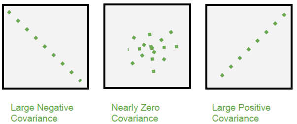
Covariance and Correlation
x = {x1,x2,…,xn}
y = {y1,y2,…,yn}
for i = 1,. . . ,n

When you get a positive result for rxy, it shows that there is a positive lin- ear relationship. When rxy = 0, this indicates that there is no linear relationship.
Covariance and Correlation
x = {2,4.4,3,3,2,2.2,2,4}
y = {1,4.4,1,3,2,2.2,2,7}
mean x and y = 2.825

positive relationship
Covariance and Correlation
- Correlation allows you to interpret the covariance further by identifying the strength of any association.

Covariance and Correlation
Most common of these is Pearson’s product-moment correlation coefficient. (R default)
The correlation coefficient estimates the nature of the linear relationship between two sets of observations
−1 ≤ ρxy ≤ 1
ρxy = 1, which is a perfect positive linear relationship
Covariance and Correlation
x = {2,4.4,3,3,2,2.2,2,4}
y = {1,4.4,1,3,2,2.2,2,7}
(mean x and y = 2.825)
(sx = 0.953 and sy = 2.013)
(rxy = 1.479)

ρxy is positive
Covariance and Correlation
xdata <- c(2,4.4,3,3,2,2.2,2,4)
ydata <- c(1,4.4,1,3,2,2.2,2,7)
cov(xdata,ydata)## [1] 1.479286cor(xdata,ydata)## [1] 0.7713962Covariance and Correlation
xdata <- c(2,4.4,3,3,2,2.2,2,4)
ydata <- c(1,4.4,1,3,2,2.2,2,7)
plot(xdata,ydata,pch=13,cex=1.5)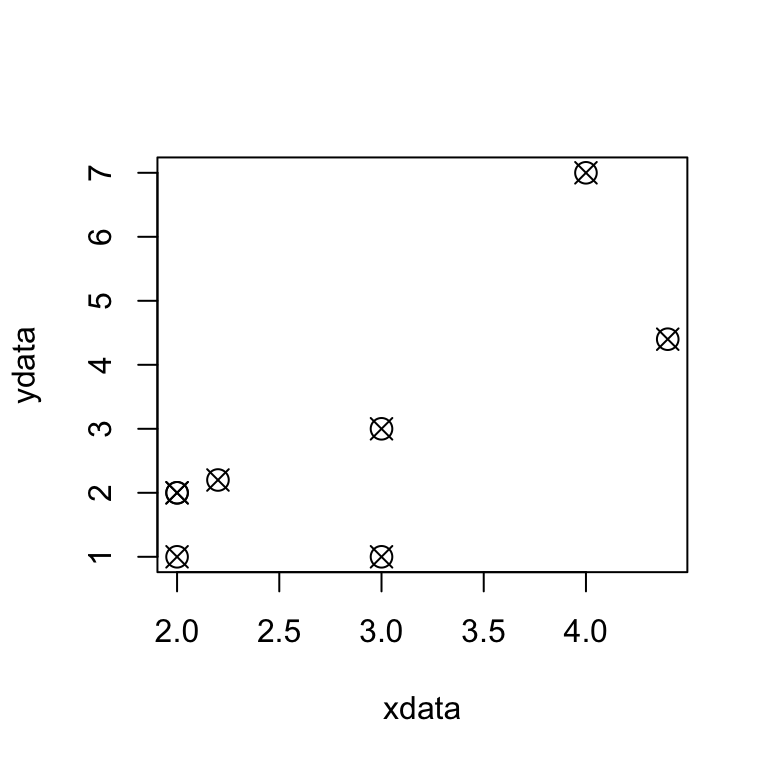


Basic Data Visualization
Barplots and Pie Charts
station_data <- read.csv("https://web.itu.edu.tr/~tokerem/18397_Cekmekoy_Omerli_15dk.txt", header=T, sep = ";")
head(station_data)## sta_no year month day hour minutes temp precipitation pressure
## 1 18397 2017 7 26 18 0 23.9 0 1003.0
## 2 18397 2017 7 26 18 15 23.9 0 1003.1
## 3 18397 2017 7 26 18 30 23.8 0 1003.2
## 4 18397 2017 7 26 18 45 23.8 0 1003.2
## 5 18397 2017 7 26 19 0 23.6 0 1003.2
## 6 18397 2017 7 26 19 15 23.2 0 1003.1
## relative_humidity
## 1 94
## 2 95
## 3 96
## 4 96
## 5 96
## 6 97Barplots and Pie Charts
head(station_data$temp)## [1] 23.9 23.9 23.8 23.8 23.6 23.2barplot(station_data$temp)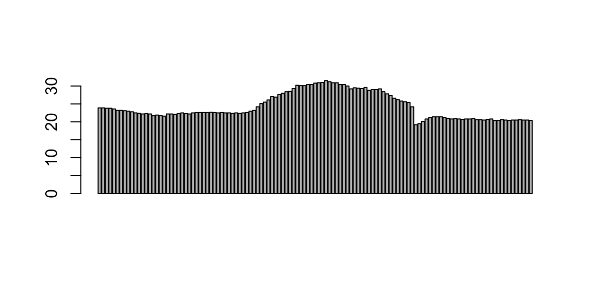
Barplots and Pie Charts
table(station_data$temp)##
## 19.2 19.5 20.1 20.4 20.5 20.6 20.7 20.8 20.9 21 21.2 21.4 21.6 21.7 21.9
## 1 1 1 4 6 4 2 6 2 1 2 3 1 2 1
## 22.1 22.2 22.3 22.4 22.5 22.6 22.7 22.8 23 23.1 23.2 23.6 23.8 23.9 24.2
## 1 5 3 3 8 7 1 1 2 1 3 1 2 2 2
## 25.1 25.4 25.5 25.6 25.8 26.1 26.2 26.6 26.9 27.1 27.4 27.6 27.8 28 28.4
## 1 1 1 1 1 1 1 1 1 1 1 1 1 1 2
## 28.5 28.8 29 29.2 29.3 29.4 29.5 29.6 30 30.1 30.2 30.4 30.8 30.9 31
## 1 1 2 2 2 1 1 1 1 2 1 4 1 3 1
## 31.2 31.5
## 1 1f_temp <- table(station_data$temp)Barplots and Pie Charts
barplot(f_temp)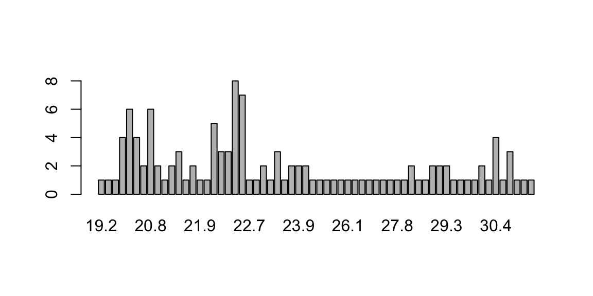
Barplots and Pie Charts
barplot(f_temp,beside=TRUE,horiz=TRUE,las=1,
main="Frequency of Station Temperature",
names.arg=c("T"),legend.text=c("TEMP-f"),
args.legend=list(x="bottomright"))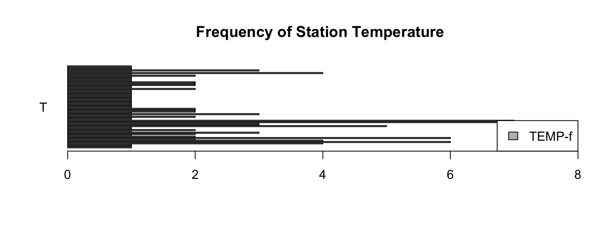
Barplots and Pie Charts
library(ggplot2)## Warning: package 'ggplot2' was built under R version 3.5.2qplot(factor(station_data$temp),geom="bar")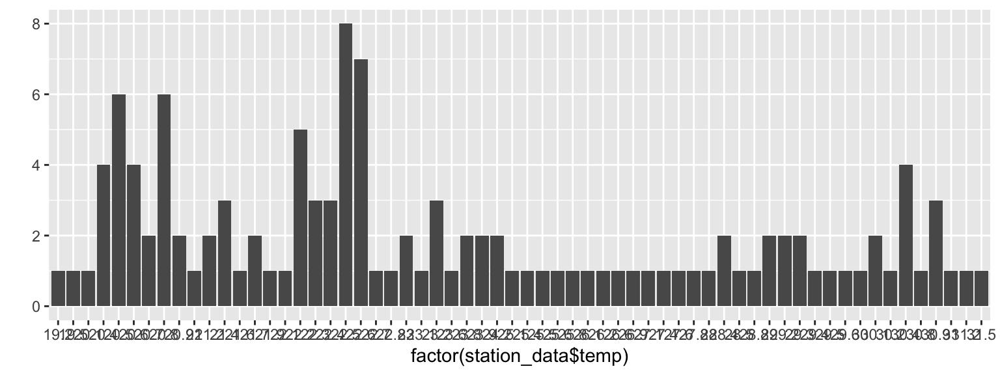
Barplots and Pie Charts
head(station_data$precipitation)
pie(table(station_data$precipitation),labels=c("V1","V2","V3","V4","V5"),col=c("white","blue","green","orange"),main="pie chart for precipitation")
Histogram
hist(station_data$temp)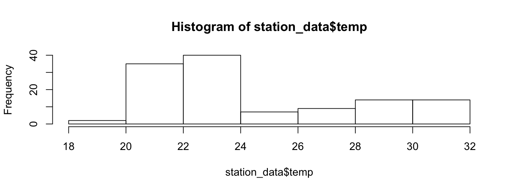
Histogram
hist(station_data$tem,breaks=seq(19,32,1),col="green",main="Temp",xlab="HP")
abline(v=c(mean(station_data$temp),median(station_data$temp)), col=c("blue","red"),lty=c(2,3),lwd=2)
legend("topright",legend=c("mean T","median T"),lty=c(2,3),lwd=2,col=c("blue","red"))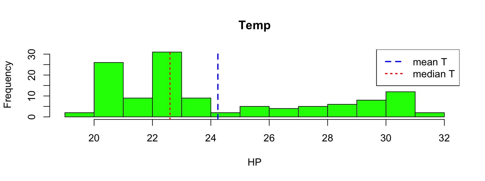
Histogram
qplot(station_data$temp,geom="blank",main="Temp Hist",xlab="Temp")+
geom_histogram(color="black",fill="white",breaks=seq(19,32,1),closed="right") +
geom_vline(mapping=aes(xintercept=c(mean(station_data$tem), median(station_data$tem)), linetype=factor(c("mean","median"))) , col=c("blue","red"),show.legend=TRUE)+
scale_linetype_manual(values=c(2,3)) +
labs(linetype="")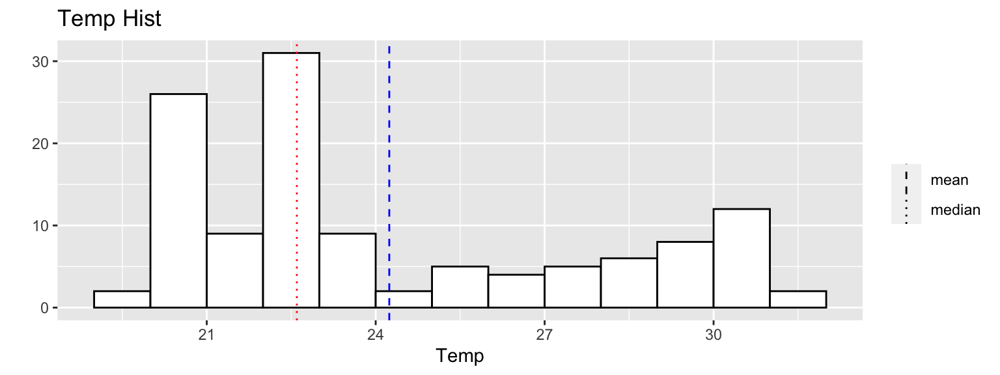
Boxplot
boxplot(station_data$temp)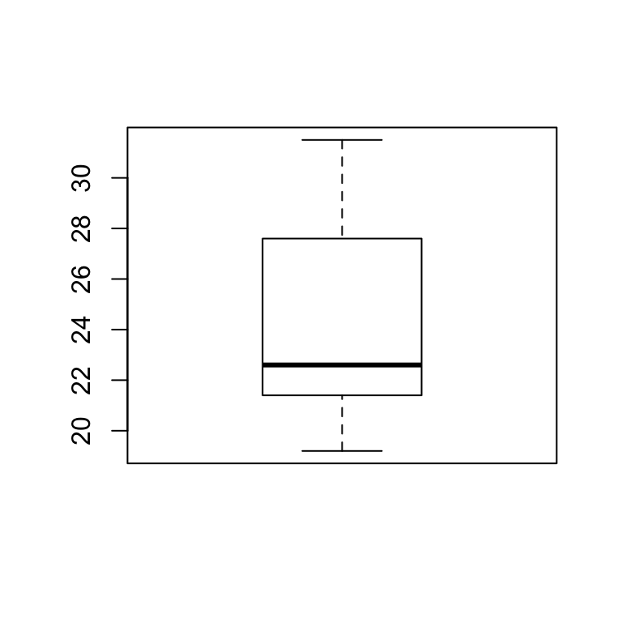
Boxplot

Scatter Plots
plot(station_data$temp,station_data$relative_humidity)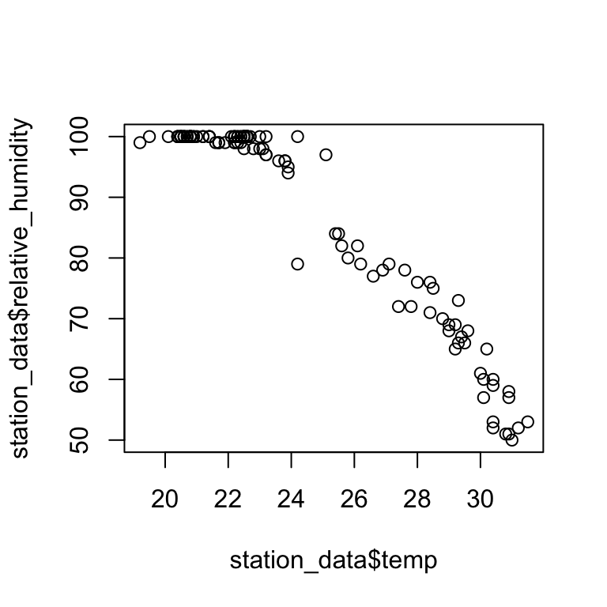
Scatter Plots
head(station_data[,7:10])## temp precipitation pressure relative_humidity
## 1 23.9 0 1003.0 94
## 2 23.9 0 1003.1 95
## 3 23.8 0 1003.2 96
## 4 23.8 0 1003.2 96
## 5 23.6 0 1003.2 96
## 6 23.2 0 1003.1 97library("GGally")
ggpairs(station_data[,7:10],axisLabels="internal")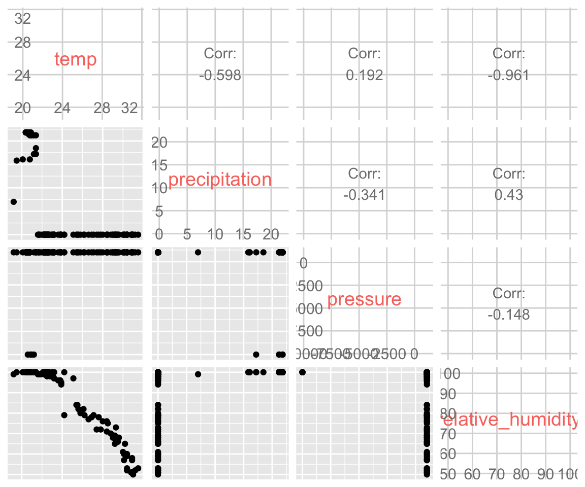